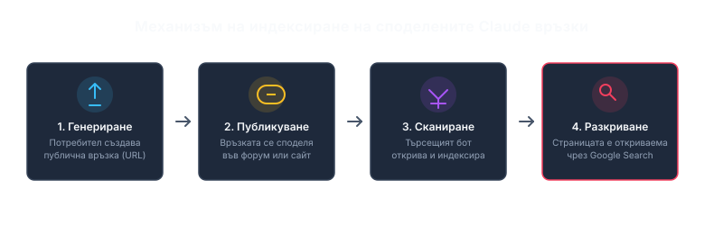

Индексираха публично споделени чатове и артефакти от Claude в Google Search
Според репортаж на технологичното издание VentureBeat [1], през изминалия уикенд бе открито, че част от разговорите и интерактивните приложения („артефакти“), които потребителите на Claude са направили споделени чрез генериране на линк, са индексирани от Google Search и са станали свободно достъпни за всеки потребител на търсачката, пораждайки въпроси относно защитата на данните и потребителската поверителност.
Откриването на проблема
Разкритието беше споделено за първи път на 25 юли 2026 г. от потребител в платформата Reddit с псевдоним -void1, който демонстрира, че търсене с оператора site:claude.ai/share връща множество резултати с реални потребителски разговори [1]. Потребители съобщават, че сред индексираните страници се намират дискусии по юридически въпроси, автобиографии, кодове за създаване на криптовалутни портфейли и вътрешни бизнес планове [1].
Ден по-късно, основателят на BigIdeasDB Ом Пател публикува в социалната мрежа X информация, че подобно търсене за site:claude.ai/public/artifacts разкрива интерактивни приложения, табла с данни и документи [1]. VentureBeat независимо потвърди, че множество чужди проекти от тип „артефакти“ действително са се появявали в търсачката без изискване за автентификация [1].
Механизъм на излагане на данни
Важно е да се отбележи, че инцидентът не представлява пробив в сигурността на платформата или уязвимост в софтуера на Anthropic, а по-скоро непредумишлено изтичане на данни [1]. Засегнати са единствено разговори и артефакти, които самите потребители са избрали да споделят публично чрез менюто на платформата [1]. Преди генериране на линк за споделяне, системата извежда предупреждения, че всеки, който разполага с него, може да получи достъп до съдържанието [1].
Проблемът обаче произтича от разминаването между очакванията на потребителите и реалната уеб спецификация [1]. Много от тях са възприемали опцията „Всеки с този линк“ като скрита връзка (подобно на некодирано видео в YouTube), без да подозират, че тези страници могат да бъдат сканирани от търсещите роботи на Google. Уеб страници, които са достъпни без парола, се индексират автоматично, освен ако уеб администраторите не са приложили изрични noindex мета тагове [1].

Диаграма: Svetni.me
Прецеденти и реакция
Инцидентът с Claude не е първият по рода си. Преди време OpenAI се сблъска с подобна критика, след като споделени разговори от ChatGPT започнаха да се появяват в търсачката на Google [1]. През септември 2023 г. пък споделени сесии от тогавашния изкуствен интелект Bard на Google също бяха индексирани по подобен начин [1]. Тогава от Google реагираха бързо с блокиране на процеса, като подчертаха, че не са имали намерение споделените чатове да се озовават в масовия индекс [1].
До неделя сутринта голяма част от резултатите за споделени чатове на Claude изчезнаха от индекса на Google Search, което предполага, че Anthropic и Google вече предприемат действия за ограничаване на видимостта им [1]. Въпреки това, експертите съветват организациите да преразгледат споделеното съдържание и да прилагат същите строги политики за ИИ инструменти, каквито важат за корпоративните пространства в Google Docs или Slack [1].
Източници: